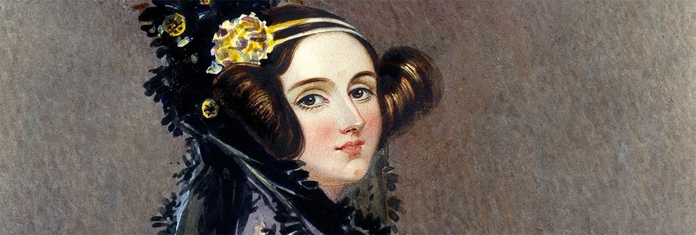

ADA LOVELACE
About
Born: December 10, 1815
Died: November 27, 1852
Education:University of London
As Lovelace was from an affluent family, Lovelace was tutored thrughout her childhood and adolescence, showing much interest in mathematics and science. As she reached early adulthood, Lovelace was introduced to aspring computer scientist and Lucasian Professor of Mathematics at the University of Cambridge and "father of the computer", Charles Babbage. Babbage fostered Lovelace's interest in computer science and programming by showing her his Difference Engine. During this time, Lovelace also expressed her interest in advanced mathematics and studied differential calculus under the guidance of Professor Augustus De Morgan of the University of London. Lovelace also conversed with renown Scottish astronomer and mathematician Mary Somerville, who Lovelace discussed mathematics and Babbage's Differential Engine with.

Facts
- Her father was a renown poet named Lord Byron.
- Her parents divorced before she reached the age of 1 and she grew up educated because her mother thought it would prevent her from developing her father's moody and unpredictable nature.
- She married William King in 1835. After he became the Earl of Lovelace, she took the title of Countess of Lovelace.
- Her work was one of a few documents that inspired Alan Turing's work on the modern computer.
- Her name is actually Lady Ada King, Countess of Lovelace, though she is called Ada Lovelace.
- She is considered the first computer programmer due to her contributions to computer science and her work on Charles Babbage's Analytical Engine.
- She was described as the "Enchantress of Numbers" by her mentor, Charles Babbage, who was considered the "father of computers."
- She was mentored by Mary Somerville, a renown Scottish female astronomer and mathematician.
- At the age of 12, Lovelace had already conceptualized a flying machine.